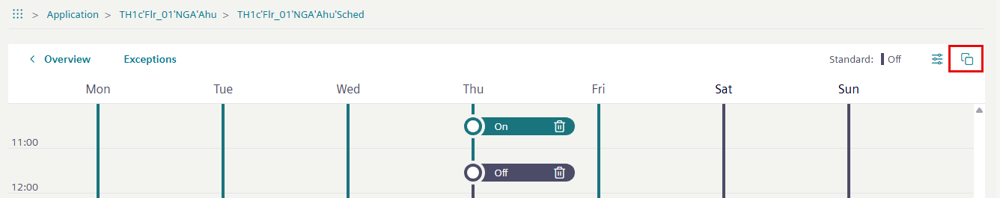
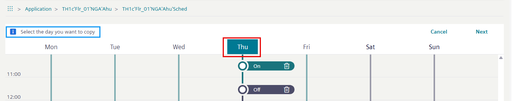
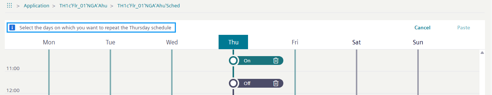
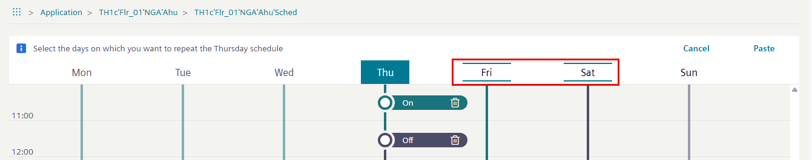
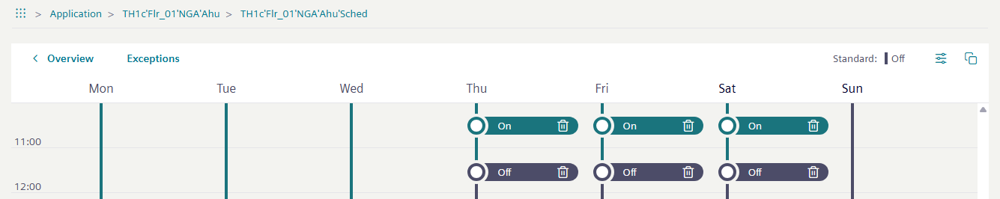

Copying the activities of one day
With the copy function, entries can be easily duplicated for one or several days.
- While in Edit mode, select Copy in the heading.

- The Select the day you want to copy dialog opens.
- Select the day to be copied.

- Select Next.
- The Select the days on which you want to repeat the exception schedule dialog opens.

- Select the target day(s) for your copy.

- Select Paste. Changes are automatically saved, and the copied day overwrites the day(s) it is pasted to.
